Introduction to HCI
Lecture 1 · Izountar Yousra, Faculty of Computer Science, Université Alger 1 · 2026/2027.
From punched cards to virtual reality headsets: how humans talk to machines, and why the interface decides everything.
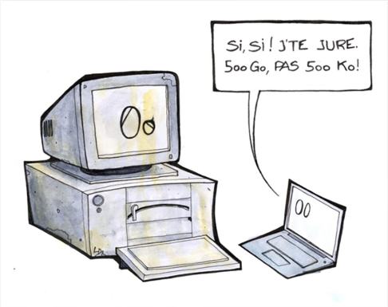
Humorous cartoon: old PC and laptopCourse roadmap
Scenario: you have been hired to fix StudyHub, a learning platform everyone hates. Each part of the course answers one question about fixing it.
1. Introduction to HCI
One acronym, two meanings, and a field that sits between people and machines.
One acronym, two meanings
- Interfaces: the hardware and software devices that let a human user interact with an interactive digital system (an ATM touchscreen and its software).
- Interactions: the reciprocal actions between both: commands from human to machine (tapping "pay"), feedback from machine to human (the terminal beeps and shows "Approved").
Also used for human-machine communication, human-machine dialogue and human-robot interaction.
A bit of etymology
Interface: inter (between) + facies (appearance).
Interaction: inter (between) + actio (capacity to act).
Between hardware and human
- Hardware: computers, tablets, smartphones.
- Operating system: Windows, Linux, macOS.
- Software: downloaded programs ("thick clients": desktop and mobile apps) or used through a browser and websites.
- Users: HCI is the layer where the person meets all of the above.
Consequences of good HCI (Meinadier)
- Ease of learning: you start at once, without a manual.
- Ease, efficiency and safety: an undo button protects from mistakes.
- Pleasure of use and acceptability: people use the software instead of finding workarounds.
- User satisfaction and satisfactory productivity of the person-machine pair.
- Profitability for the company: fewer support calls, higher completion rates.
Bad HCI: individual level
- Confusion: where do I upload my assignment?
- Frustration: clicking submit again because nothing confirms it worked.
- Panic: submit and abort buttons that look identical in a timed exam.
- Stress: a red countdown and a laggy page.
- Boredom: identical unskippable intro videos in every chapter.
Bad HCI: company and society
- Rejection, serious errors: staff go back to paper ledgers or miskey a decimal.
- Under-use and lower performance: manual searches instead of the new tool.
- Regression to execution-only tasks: expertise erodes until nobody can act when the tool fails.
- Costs: task changes, system rewrites, emergency patches after rollout.
| Technocentered 🏭 | Anthropocentered 🧑 | |
|---|---|---|
| Centered on | The machine and its capabilities | The human and their needs |
| Who adapts | The user adapts to the machine | The machine adapts to the user |
| Point of view | The designer | The user |
2. Ergonomics and design
Adapting the interface, and telling ergonomics, visual design, UI and UX apart.
| Adapt to… | What it means | Example |
|---|---|---|
| The user | Physical differences, knowledge and experience (domain, computing), socio-cultural traits | Larger touch targets and screen-reader support; "05/10" is 5 May in the US but 5 October in France; an Arabic UI must mirror its whole layout (RTL) |
| The context | General public, leisure, industry, critical systems | A museum kiosk needs zero learning; a nuclear control panel prevents accidental commands |
| The task | Occasional to daily use, risky or time-constrained work | A tax site used once a year must re-explain itself; ambulance dispatch must work in bright sun |
| Technical constraints | Platform, memory and bandwidth, screen and sensors, legacy code | Ctrl vs Cmd shortcuts; a rural app that works on slow 2G; a watch app on a 1-inch screen |
What is ergonomics?
- Of objects and workstations: fit them to the person (an adjustable chair against back pain).
- Software ergonomics, corrective: improve existing software, cut errors and learning time.
- Design-oriented: build usability in from the first wireframe.
- Prospective: imagine new ergonomic interfaces (voice-only smart homes).
Etymology
Ergonomics: Greek érgon (work) + nómos (law).
A multidisciplinary field
| HCI / software ergonomics ⚙️ | Visual design 🎨 | |
|---|---|---|
| Choices | Functional | Aesthetic and symbolic |
| Goal | Efficiency, comfort, adaptation to users | A good (brand) image: type, palette, icons, layout, animation |
| Nature | Objective and constant (aside from scientific advances) | Subjective and dependent on trends |
| UI design | UX design | |
|---|---|---|
| Stands for | User Interface | User eXperience |
| Covers | What the user sees and touches: colours, buttons, type, layout | The whole lived experience: easy, logical, comfortable? |
| Components | User interface, visual design | Functionalities, information architecture, usability, interaction design, content strategy, and UI nested inside |
Micro case studies: four websites on two axes
| Website | Ergonomics | Design | Why |
|---|---|---|---|
| 📖 Wikipedia | High | Low | Plain, dense, highly functional |
| 🪑 Gone's (furniture) | High | High | Clean, modern e-commerce: the ideal quadrant |
| 🍕 Pizza site | Low | Low | Colourful, cluttered, clashing colours |
| 📷 Photo blog | Low | High | Elegant typography, but pop-ups hurt usability |
Common misconceptions about software ergonomics
"It's easy, it's fast"
False. It is difficult, long and costly.
"It's just a cosmetic operation on the screen"
False. It requires deep work and must start early in the project.
"It's only a matter of taste, common sense, intuition"
False. There are rules to follow, grounded in scientific sources.
"There is a miracle method"
False. No turnkey solution exists: only theoretical and experimental reference points, trade-offs and compromises.
3. History: from the origins to the future
Every decade invented a new way of talking to the computer.
1945-1970: the beginnings
- Limited input/output: card punches and readers, dashboards of indicator lights, printers.
- Then: screens, keyboards and command languages.
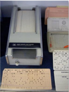
Card punch and punched cards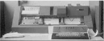
Early console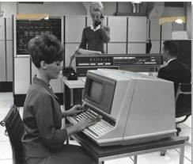
Operator at an early terminal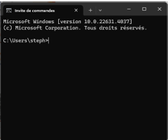
Modern command promptThe 1970s: "modern" computers
- 1963: graphic display and light pen.
- 1963: the first "mouse".
- 1980: mass-market applications built on direct manipulation, still our reference today.
Milestones: Xerox 8010 Star (1981), Apple Lisa (1982), Macintosh (1984), Windows 3.0 (1990).
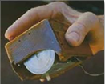
First mouse (1963)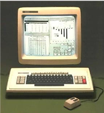
Xerox 8010 Star (1981)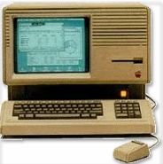
Apple Lisa (1982)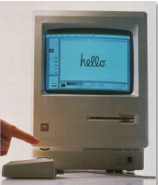
Macintosh (1984)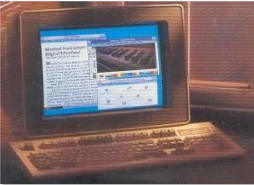
Windows 3.0 (1990)Evolution of interfaces
- Systems that are more user-friendly, easy to understand and use.
- Graphical interfaces and direct manipulation: the user acts "directly" on objects shown on screen.
- WYSIWYG: What You See Is What You Get.
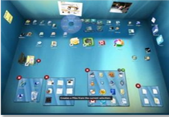
3D graphical desktop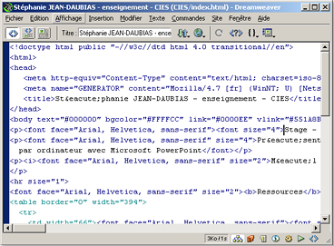
HTML source code editing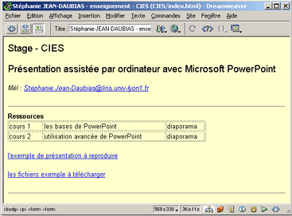
WYSIWYG editing4. Output devices
Everything through which the machine addresses our senses.
Overview
- Screens, from classic to miniature.
- 3D printers: the output becomes a physical object.
- Force feedback and haptic feedback: joystick, wristband, vibrations on a smartphone.
- Sound: speech synthesis, spatialised 3D sound (front: future, behind: past), holophonic and binaural 3D sound.
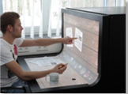
Large touch screen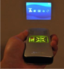
Miniature screen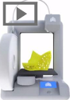
3D printer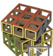
3D-printed lattice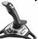
Force-feedback joystick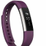
Haptic wristband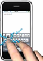
Smartphone haptic keyboard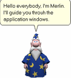
Voice assistant character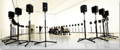
Holophonic loudspeaker array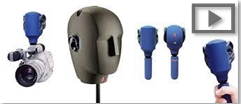
Binaural microphones2D information visualisation
- File representation: treemaps and radial graphs to see how a disk is used.
- Fish-eye: focus + context: enlarge the area of interest without losing the rest (metro map, alphabetical list).
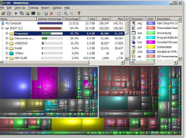
File-usage treemap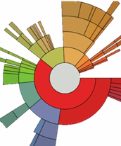
Sunburst diagram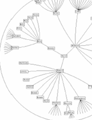
Radial tree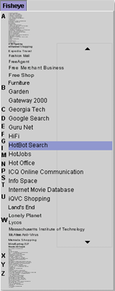
Fish-eye list2.5D information visualisation
- Between 2D and 3D.
- Richer than 2D.
- Less demanding in computing power than 3D.
Examples: temperature surface, perspective graph, temporal representation of files.
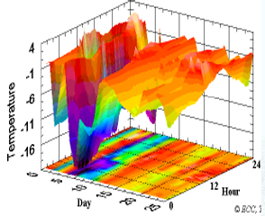
Temperature surface (2.5D)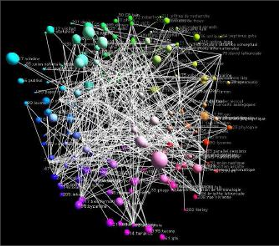
Network graph in perspective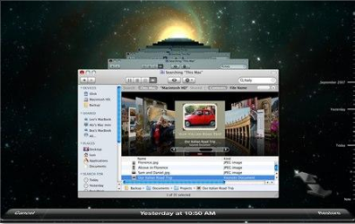
Temporal file view3D information visualisation
- Anaglyphs (red-cyan glasses), active shutter glasses, 3D screens.
- Immersive headsets and CAVE-type immersive rooms.
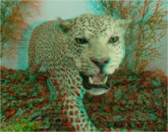
Anaglyph leopard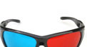
Red-cyan anaglyph glasses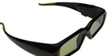
Active shutter glasses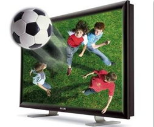
3D television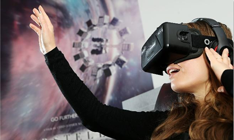
VR headset user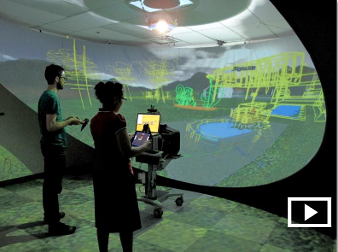
Immersive dome room5. Input devices
Everything through which humans address the machine.
Keyboards, pointing, sound
- Keyboards: azerty/qwerty, "ergonomic" layouts (Dvorak, bépo).
- Pointing: mouse, trackball, joystick, touchpad, touch input.
- Sound: speech recognition, sound and music recognition.
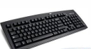
Standard keyboard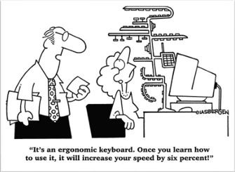
Ergonomic keyboard cartoon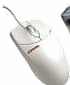
Mouse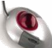
Trackball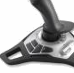
Joystick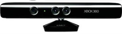
Kinect sensor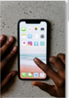
Touchscreen phone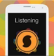
Music recognition app2D visual input
- 2D barcodes (QR codes): text, web, mail, wifi, business card.
- Touchscreen, fingerprint reader, light pen.
- Recognition of drawn strokes (music scores) and handwriting.
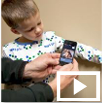
Child scanning a code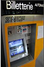
Ticket machine touchscreen Touch table
Touch table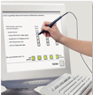
Light pen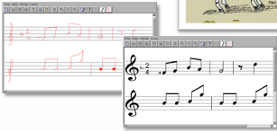
Music stroke recognition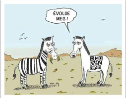
QR code zebra cartoon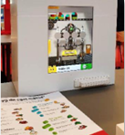
Building-block interface3D input
- Position, direction and speed sensors: glove, headset, motion capture, Wiimote, Kinect.
- Face and iris recognition for authentication.
Other inputs: sensors
- Temperature, humidity, air composition, light.
- Orientation, proximity, movement, altitude, acceleration, magnetic field.
- Heart rate, sound level, atmospheric pressure, smells.
- Location (GPS).
6. Multimodal and multisensory interaction
Two notions not to be confused
- Multimodal: a combination of input means. Close modalities (two-handed interaction) or different ones (voice + gesture: "Put that… here").
- Multisensory: involves several senses (sight, hearing, touch, taste, smell) through effects (wind, water, light, vibrations, body movement) produced by effectors (fan, vaporiser, lamp, haptic vest, moving seat).
7. Virtual, augmented, mixed and extended reality
Virtual reality (VR)
- Immersion in a 360° 3D world in real time, the user is represented by an avatar.
- 3D interactions: gestures, movements, voice commands.
Augmented reality (AR)
- The user is not cut off from reality.
- Examples: Pokémon GO, furniture preview, overlays on a football pitch.
 AR maintenance guide
AR maintenance guide AR driving overlay
AR driving overlayDiminished reality
- An element is removed from a "real" image, in real time.
- (Anti-)commercial use: erasing advertisements.
 Original scene with a can
Original scene with a can Same scene with the can removed
Same scene with the can removedMixed reality (MR)
- A real-time overlay (output) that you can interact with (input).
- Mostly professional uses: maintenance, training, design.
 Mixed reality with holographic glasses
Mixed reality with holographic glassesExtended reality (XR)
- All immersive technologies combining real and virtual: VR, AR, MR.
- The virtuality continuum runs from reality to virtual reality, through augmented reality and augmented virtuality.
| Virtual (VR) | Augmented (AR) | Diminished | Mixed (MR) | |
|---|---|---|---|---|
| Principle | Simulated 360° 3D environment, avatar | Virtual image overlaid on the real world | Removal of an element from a "real" image | Real and virtual combined, with interaction |
| Real / virtual | 100% virtual, real world hidden | Perception centred on the real | Virtual modifies the image of the real | Close link between both |
| Interactions | With the virtual, in 3D | Weak | None | With the virtual and the real |
| Equipment | VR headset, smartphone + cardboard | Screen, glasses, projection onto the real | Screen | Specific |
| Uses | Games, education, medical, research | Leisure, professional, medical, safety | Removing advertisements | Mostly professional |
8. Tangible interfaces
Real objects + digital objects
- Hybrid devices: you act directly on objects.
- Simpler and more intuitive interaction.
Examples: wearable projector, display projected on the arm, physical music notes, interactive table with cubes, a circuit drawn and manipulated by hand.
 Wearable camera and projector
Wearable camera and projector Interface projected on the arm
Interface projected on the arm Physical music notes
Physical music notes Circuit manipulated by hand
Circuit manipulated by hand Interactive table with objects
Interactive table with objects9. Mobile computing and interface plasticity
Mobile devices are small, powerful and connected, and used anywhere. The compatibility problem (platform, bandwidth, memory, screen size) is solved by the plasticity of interfaces.
Plasticity: Adaptation with Usability Preservation
- Definition: The capacity of a user interface to adapt to hardware context (screen size, device type) and environment, while preserving usability.
- Multi-Device Support: Seamlessly scales and restructures layouts across smartphones, tablets, desktop workstations, and high-resolution wall displays.
- Context Awareness: Dynamically adjusts interaction targets, font sizes, and navigational elements depending on screen orientation or input capabilities (touch vs. mouse).
10. Beyond the desktop
Computing leaves the screen and spreads into objects, clothes and places.
Smart objects, web of things
Wearable computing
Pervasive and ubiquitous environments
- Pervasive (diffuse computing): communicating objects recognise and locate each other and interact (data transfer, synchronisation) without user action, at any moment.
- Ubiquitous = pervasive + mobile.
Groupware ("collecticiel")
- Together, same place: interactive whiteboard, multi-touch table.
- Remotely: shared editors with communication tools, e.g. collaborative AR with remote annotation over a shared document.
11. Review exercises
Self-check covering the whole lecture. Open each answer after you have tried.
Exercise 1 — Key Vocabulary
Read each definition and try to recall the right term before revealing it
1The set of hardware & software devices allowing a user to interact with a digital system.
Show answer
Interface. From Latin inter (between) + facies (appearance).
2The set of reciprocal actions (commands + feedback) between a human and a machine.
Show answer
Interaction. From Latin inter (between) + actio (capacity to act). Interfaces are the support for interactions.
3An approach where the machine adapts to the user's needs, not the other way round.
Show answer
Anthropocentered approach (from Greek ánthropos, human + kéntron, center) — opposite of the technocentered approach.
4The scientific field studying how to adapt work / tools to human physiological & psychological characteristics.
Show answer
Ergonomics. From Greek érgon (work) + nómos (law). Software ergonomics can be corrective, design-oriented, or prospective.
5The discipline focused purely on usability, layout and interaction of the interface (not the overall lived experience).
Show answer
UI design (User Interface design) — as opposed to UX design, which covers the whole quality of the user's experience with the system.
6What You See Is What You Get.
Show answer
WYSIWYG — what appears on screen matches exactly what you get once printed; a core idea of direct manipulation / graphical interfaces.
Exercise 2 — True or False?
Decide, then reveal the correct answer
1"Software ergonomics is easy and fast to apply."
Show answer
False. It is difficult, long and costly — it is a misconception, not a shortcut.
2A badly designed interface can lead to confusion, frustration, panic, stress and boredom for the individual user.
Show answer
True. These are the individual-level consequences described by Meinadier.
3There exists a single "miracle method" that guarantees a good HCI if you follow it step by step.
Show answer
False. No turnkey solution exists — only theoretical & experimental reference points, trade-offs and compromises.
4Good HCI design only matters for the end user — companies see no financial impact either way.
Show answer
False. Bad HCI causes rejection, errors, under-use and costly rewrites; good HCI increases productivity and profitability for the company.
5Visual (graphic) design and software ergonomics pursue the exact same goals.
Show answer
False. Ergonomics targets efficiency/comfort and is objective & fairly constant; visual design targets aesthetics/branding and is subjective & trend-dependent.
6Augmented Reality still lets the user perceive the real world, unlike Virtual Reality.
Show answer
True. AR overlays virtual content onto reality; VR fully occludes the real world in a 100% virtual, immersive scene.
Exercise 3 — Classify the Approach
For each scenario: technocentered 🏭 or anthropocentered 🧑?
1A banking app forces every customer to learn a complex menu tree because "that's how the core banking system is structured internally."
Show answer
Technocentered. The user must adapt to the machine's internal logic — the designer's point of view dominates.
2A medical records system is redesigned after watching nurses work, so that its screens follow their actual ward routine.
Show answer
Anthropocentered. The system is shaped around real user needs and tasks — the user's point of view drives the design.
3A settings screen exposes every low-level parameter of the operating system "because it's all technically possible."
Show answer
Technocentered. Centered on the machine's capabilities rather than what the human actually needs to control.
4An e-commerce checkout is shortened from 6 steps to 2 after user testing shows shoppers abandoning their carts.
Show answer
Anthropocentered. The machine (the checkout flow) is adapted to reduce friction for the human, based on observed behaviour.
Exercise 4 — Input or Output?
For each device, is it mainly an input or an output device?
1Data glove tracking hand position and gestures
Show answer
Input (3D input device — position/direction sensor).
2Force-feedback joystick that vibrates when you hit an obstacle
Show answer
Both! It's an input device (you steer with it) AND an output device (haptic force feedback) — a good example of bidirectional interaction.
33D printer producing a physical prototype
Show answer
Output device (rapid prototyping / fabrication).
4QR code scanned by a smartphone camera
Show answer
Input — a 2D visual input device.
5Spatialized 3D / binaural sound in a game
Show answer
Output device (sound output for information / immersion).
6Fingerprint reader unlocking a phone
Show answer
Input — a 2D visual / biometric input device.
Exercise 5 — Which Reality Is It?
VR · AR · MR · Diminished Reality · Tangible Interface
1A headset removes an unwanted advertisement from a livestreamed video feed in real time.
Show answer
Diminished Reality. An element is removed from the real image; there is no interaction with it.
2A surgeon wears smart glasses that overlay a patient's vitals on top of what they see, and can grab/move that virtual panel with their hand.
Show answer
Mixed Reality. There is a tight link between real and virtual, with interaction possible on BOTH sides.
3A fully 360° headset places the user's avatar inside a simulated city, cutting them off entirely from the physical room.
Show answer
Virtual Reality. 100% virtual; the real world is occluded.
4A phone app shows furniture "placed" in your living room through the camera view, but you can't touch or move it directly.
Show answer
Augmented Reality. A virtual image is superimposed on reality, with limited interaction with the virtual layer.
5Connected physical tokens on a table trigger digital content on a projector when moved by hand.
Show answer
Tangible Interface. A hybrid device combining real objects with digital ones for simpler, more intuitive interaction.
Exercise 6 — Ergonomics vs. Design
Place each website on the quadrant and justify your answer
1📖 Wikipedia — plain, dense, highly functional, minimal visual design.
Show answer
High ergonomics / low design: extremely usable and functional, but visually austere.
2🪑 Furniture brand "Gone's" — clean, modern e-commerce site.
Show answer
High ergonomics / high design: strong on both usability and aesthetics — the ideal quadrant.
3🍕 Pizza vendor website — colorful, cluttered, clashing colors.
Show answer
Low ergonomics / low design: busy and hard to use, without a coherent visual identity either.
4📷 Photo blog — elegant "designer" typography, cluttered pop-ups.
Show answer
Low ergonomics / high design: visually appealing, but usability suffers from intrusive pop-ups.
Exercise 7 — Put History in Order
From earliest (1) to most recent (6)
A. Punch cards & control panels · B. First computer mouse (1963) · C. Macintosh (1984) · D. Smartphones & touch input · E. Virtual / Augmented Reality headsets · F. Smart objects / Web of Things
Show the correct order
1. A — Punch cards, control panels (1945-1970)
2. B — First "mouse" (1963), alongside the graphic screen & light pen
3. C — Macintosh (1984), consumer GUI & direct manipulation
4. D — Mobile / nomadic computing, touchscreens, smartphones
5. E — VR / AR / MR — immersive realities
6. F — Smart objects, Web of Things, pervasive & ubiquitous computing
Exam-prep checklist
Can you explain each of these in your own words?
12. Self-assessment quiz
Answer the questions below to test your knowledge based directly on the course material.